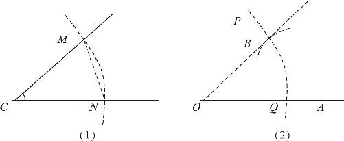
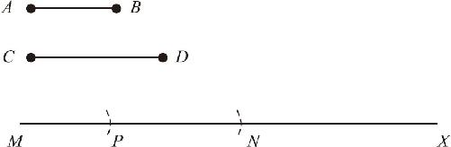

在实际生活中，大多数土地都不是方方正正的，那么，当我们面对一个任意角的时候，又能否利用绳子或尺规作出一个同样大小的角呢？
首先我们拿一截绳子，任意设定一个长度作为腰长，而后顺着已知角的两边分别比对一下，在这两条边上留下两个记号点，这样就得到了两条相等的边；再拿着绳子比画一下，量一下这两点之间的距离是多少，并把这个距离叫作底长．如果需要在另一个地方画出这个角来，我们就用已知的腰长和底长重新作出这个三角形来就可以了．具体的操作办法是：
先按住绳子的一头，然后以腰长为半径画出一段圆弧，使这个圆弧和已知直线产生一个交点．而后再把这个绳子挪过来，以右边这个交点为中心，以底长为半径再画个圆，这两个圆就产生了一个新的交点．把这个交点和已知的端点一连，该直线和已知直线之间的夹角，就是我们要求的角．为什么呢？因为这两个三角形都是等腰三角形，而且它们的腰长、底长全部都对应相等，凑齐了三边对应相等的条件，所以这两个三角形自然就是全等的了．这就是作一个角等于已知角的办法，接下来，我们把上述过程通过标准的尺规作图的方式描述一遍．
如图6－4所示，已知∠C 和一条射线OA ，要求过O 点作一条射线OB ，使∠AOB ＝∠C ．

图6－4
作图过程如下：
第一步，以C 点为圆心，任意长为半径画圆弧，圆弧分别和∠C 的两边相交于点M 、N ，圆弧上的点到圆心距离相等，所以MC ＝NC ［如图6－4（1）所示］．
第二步，以O 点为圆心，MC 长为半径画弧线PQ ，弧线和射线OA 相交于Q 点，因此，OQ ＝CN ．
第三步，量取MN 长度为半径后，以Q 点为圆心画圆，且交PQ 于B 点，可知BQ ＝MN ，由于B 点同时在弧线PQ 上，因此又有BO ＝OQ ＝CN ＝CM ．
第四步，用直尺连结OB 后，∠AOB 即为所求．
证明过程如下：
在△MCN 和△BOQ 中，由作图过程可知：
OB ＝CM ，
OQ ＝CN ，
BQ ＝MN ，
∴△MCN ≌△BOQ （三边相等判定定理），
∴∠BOQ ＝∠MCN ，即∠AOB ＝∠C ．
通过上述过程我们发现，尺规作图的确很厉害，在不知道具体角度，且没有任何测量工具帮助的情况下，却能作直角，甚至能作出任意角．那么，还有哪些尺规作图能做的事情呢？其实，几何学里面的尺规作图就相当于是代数学里的加减乘除，凡是通过加减乘除能够实现的，利用尺规作图的方式全部都可以实现．那么，几何图形和加减乘除有什么关系呢？
请仔细想一下：两条线段的长度是不是可以加在一起呀？两个角的角度是不是可以相减呢？一条线段的长度是否可以放大3倍呀？一个已知角是否可以一分为二呢？所有这些，全部都是可以的！无论是长度、角度还是面积、体积，全部都可以加减乘除．否则几何学怎么能属于数学呢？虽然我们不知道线段的具体长度，也不知道角的具体大小，可是，我们仍然可以实现加减乘除．不过在具体作图前，我们先要弄明白一个问题，我们为什么能做加减乘除呢？
其实，我们之所以能够做加减乘除，全部源于我们能够作相等的图形，我们在几何课一开始的时候，就演示了怎么作一条线段等于已知线段，现在呢，我们又学了怎么作一个新的角等于已知的角．相等能作了，加减法还会远吗？如果让我们作一条线段的长度等于另外两条线段的长，应该如何实现呢？这并不难，因为我们已经知道其中任意的一条线段的作法了，因此我们只要先画一条射线，再用圆规叉开了量一下已知线段的长度，然后回到这条射线比量一下，不就可以把已知线段的长度移动到这条射线上来了吗？完整的作图过程如下：（如图6－5所示）

图6－5
已知线段AB 、CD ，求一条线段MN ，使MN ＝AB ＋CD ．
第一步，作射线MX ；
第二步，以M 点为圆心，AB 长为半径画弧，弧线交MX 于点P ；
第三步，以P 点为圆心，CD 长为半径画弧，弧线交PX 于点N ，线段MN 即为所求．
如果我们要求两条已知线段相减呢？只需要先画出长线段，而后再在长线段内部截取出一条线段等于短线段，两条线段一截取，剩下的那段就是所求的差．由于此过程非常简单，就不再详细描述了．
线段的加减法很简单，角度的加减法也并不复杂．由于我们已经掌握了画一个角等于已知角的方法，因此要画一个角等于两个已知角的和，就只需要先画出一个角来，然后再以新画出来的角的一条边为起始边，在这个边的后面，继续把另一个角画出来就可以了．当我们画完挨在一起的两个角之后，两个角的和也就自然显示出来了．同样，如果我们要求两角之差，只需要先把大角画出来，然后在大角的内部画一个小角，两角之差就得到了．
我们都知道，乘法是连续的加法，因此知道了加法怎么做，乘法也就不难了：如果让你画一条线段等于3倍的已知线段，那你就在后边多续上两次不就行了吗？如果让你画一个角等于已知角的2倍，你也就挨着它再画个同样的角．不过，如果让你画8倍长度的线段，你就不必连续加7次了，你可以先画出2倍长度的线段，再用这2倍长度的线段为基础翻个倍，这样就得到了4倍长度的线段，再继续翻1倍，直接得到8倍长度的线段了．